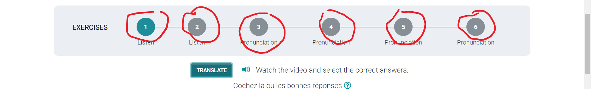

INTRODUCTION
- Ecouter et mémoriser /listen and memorize
IL ou ELLE/ HE or SHE
- Pratiquer et répéter /Practice and repeat
il ou elle
CONSONNE MUETTE/SILENT CONSONANT
- Pratiquer et répéter /Practice and repeat
The final consonant is often silent
- Practice the exercises (6 of them at the top of the page)
consonne muette /silent consonant
